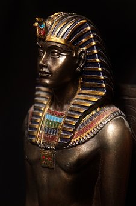
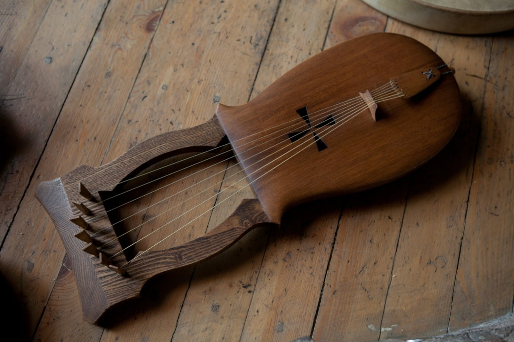
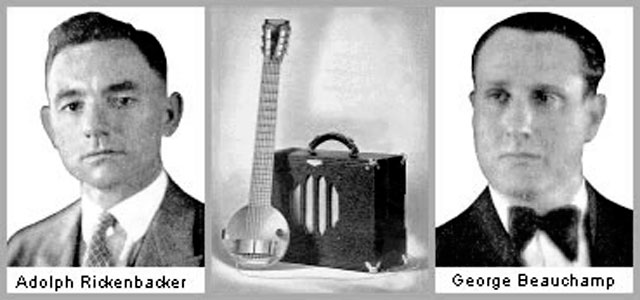

Факты истории
Гитара — популярный струнный щипковый музыкальный инструмент. Может использоваться в качестве аккомпанирующего или сольного инструмента в различных жанрах музыки.
Большинство струнно-щипковых инструментов до появления гитары имели округлый корпус и длинную шейку с натянутыми на нее 3-4 струнами. В начале 3-го века в Китае появились инструменты жуань и юэцинь, корпус у которых был сделан из двух дек и соединяющих их обечайки. Изобретения людей из Древней Азии понравились европейцам.  Они начали изобретать новые струнные инструменты. В 6-ом веке, появились первые инструменты по звуку напоминавшие современную гитару: мавританские и латинские гитары, лютни, а через несколько веков появилась виуэла, которая по форме стала первым прототипом гитары.
Из-за распространения инструмента по Европе, название «гитара» претерпело большие изменения. В Древней Греции «гитара» имела название «кифара», которое перекочевало в Испанию как латинское «cithara», затем в Италию как «chitarra», а позже во Франции и Англии появилось «gitar». Первые упоминания о музыкальном инструменте под названием «гитара» датируются 13 веком. В 15-м веке в Испании изобретают инструмент имеющий пять сдвоенных струн. Такой инструмент был назван испанской гитарой и стал музыкальным символом Испании. От современной гитары ее отличал вытянутый корпус и маленькая мензура. К концу 18-го века, испанская гитара приобретает законченный внешний вид и имеет большой запас произведений для игры, поспособствовал этому итальянский гитарист Мауро Джулиани.
В начале 19-го века испанский гитарный мастер Антонио Торрес, усовершенствовал гитару, придав ей современную форму и размер. Такой вид гитары стали называть классическими гитарами. Классическая гитара появилась в России благодаря гастролирующим по стране испанцам. Обычно гитару привозили, как сувенир и найти ее было трудно, они появлялись только в богатых домах и висели на стене. Со временем появились мастера из Испании, которые стали делать гитары в России. Первым известным гитаристом из России стал Николай Петрович Макаров, который в 1856 году попытался организовать первый международный конкурс гитаристов в России, но его идею сочли странной и отклонили. Через несколько лет Николай Петрович все таки смог организовать конкурс, но уже не в России, а в Дублине.
После появления в России, гитара получила новые функции: добавили одну струну, изменили строй гитары. Гитару с семи струнами начали называть русской гитарой. Эта гитара до середины 20-го века была популярна не только в России, но и по всей Европе. Но после 2-ой мировой войны популярность ее снизилась, и в России все чаще стали играть на обычной гитаре. На данный момент русские гитары редко встречаются. С появлением фортепиано интерес к гитаре стал уменьшаться, но уже в середине 20-го века он вернулся из-за появления электрогитар.
Первая электрогитара была создана компанией «Рикенбекер» в 1936 году. Она была сделана из металлического корпуса и имела магнитные звукосниматели. В 1950 году Лес Пол изобрел первую деревянную электрическую гитару, но через некоторое время он передал права на свою идею Лео Фендеру, так как его не поддержали в компании, где он работал. Сейчас конструкция электрогитары имеет такой же вид, как и в 1950-ых годах и не претерпела ни одного изменения.